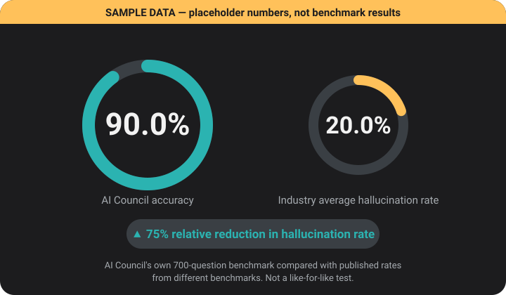

Technical overview
About AI Council
In plain words: AI Council asks several AI models your question, has a different one check the answer, and tells you where they disagreed. It all runs in your browser using your own free API keys. The rest of this page is the technical detail, for anyone who wants it.
AI Council is a client-side multi-model LLM orchestration layer. It routes each prompt to a task-appropriate model, can fan the prompt out across several heterogeneous providers, and subjects the result to cross-model verification before presenting it. The intermediate artefacts (drafts, critiques, per-model answers, tool traces) are exposed for audit.
1. What it does
A user submits a natural-language prompt. The orchestrator (a) classifies its intent, (b) selects a specialist model, (c) generates a draft, (d) has an independent model audit the draft, (e) conditionally revises it, and (f) in Council mode first queries every connected provider in parallel and reconciles their answers, explicitly flagging factual conflicts. The output can then be projected into plain language, with the full technical answer retained beneath it.
- Provider-agnostic. Any endpoint that speaks the OpenAI-compatible
chat/completionsschema can be used. Five are built in and custom endpoints can be added under ⚙ Keys. - Zero-backend orchestration. The application is a single static HTML document and all orchestration executes in the visitor's browser. The only server-side piece is a tiny anonymous question counter (see Architecture).
- Bring-your-own-key (BYOK). Requests travel browser → provider using the visitor's own API key.
- Observable. Every intermediate artefact is inspectable in the "Show how this was checked" panel.
2. Architecture
- Execution environment. Static single-page application. No application server, database or server-side session.
- Transport. HTTPS
POSTto each provider's/chat/completionswithAuthorization: Bearer <key>and a JSON body{model, messages, max_tokens, temperature, stream}. A provider must return permissive CORS headers to be callable from a browser origin; one that does not cannot be supported without a proxy, which is why such providers are not offered. - Streaming. Server-sent events (
text/event-stream). Token deltas are accumulated and re-rendered on a throttle of at least 80 ms; partial control markers are withheld from the display. - Deadlines. An
AbortControllerdeadline of 90 s per request. Each Council member additionally races a 30 s cutoff so one slow provider cannot stall the ensemble (the late response is discarded). - Token budget.
max_tokenshas a floor of 512. Reasoning-tuned models spend part of the budget on hidden chain-of-thought, and a very small cap would otherwise yield an empty completion. - Persistence.
localStorageholds chats (including their saved workings), long-term memory and preferences. API keys, and the proxy access token, are stored only when "Remember" is ticked (it is unticked by default). Chats and memory can be saved to, and restored from, a backup file with the sidebar's Export and Import; that file never contains keys. - Token counter. ⚙ Keys shows, per provider, the tokens each provider itself reported for this session's calls (the response's
usagefield). Streamed replies only carry it if the provider honoursstream_options.include_usage; calls without usage are shown in their own column and never estimated. - Optional key-holding proxy. A reverse proxy (Cloudflare Worker) can hold provider keys server-side, guarded by an origin allow-list, a shared-secret header and a fixed provider allow-list. It is disabled by default and is not used by visitors.
- Global question counter. The sidebar shows a running total of questions asked by all users, abbreviated with
K(thousand),Mi(million) andBi(billion), truncated to one decimal so it never overstates. Each question sends one anonymousPOST(no body, no custom headers, no question text) to a counter endpoint on the same Worker, which increments a single integer held in a Durable Object. Because a Durable Object serialises access to its storage, simultaneous increments cannot be lost. The page reads the total on load, after each of its own questions and once a minute while the tab is visible, and hides the box if the counter is unreachable. Per-IP (20 a minute) and global (600 a minute) rate limits stop one client from inflating it, so treat the figure as indicative, not audited.
Providers and roles
| Provider | Workhorse model | Fast model | Roles |
|---|
If a preferred provider has no key or fails, routing falls back to any provider that is available, so the system degrades gracefully instead of failing.
3. Request pipeline
- Intent routing (zero-shot classification). A fast model labels the prompt as
CODE,CREATIVE,REASONINGorFACTUALwith a one-word constrained output that is regex-parsed. Routing has a fallback chain: if a provider errors, exceeds its 5 s deadline or returns an unusable reply, the next-healthiest provider is tried (up to 3 in all); if none succeeds, a local weighted keyword classifier decides, so later stages always receive a meaningful class. The pipeline bar and the workings state which path was used. Each label maps to a specialist provider, and the system prompt is conditioned per class: step-by-step derivation forREASONING, and an explicit instruction to state uncertainty forFACTUAL. - Specialist generation. The routed provider produces a draft over the last 8 messages, plus a rolling summary and extracted user facts injected as a system-prompt preamble (see Memory). If tools are enabled, generation runs a bounded function-calling loop (see mechanism 4).
- Cross-model critique (LLM-as-a-judge). A different provider from the generator is chosen, preferring one that is not currently failing or rate-limited. It must reply with the literal token
APPROVEDor a bulleted defect list, and is instructed not to rewrite the answer. Separating the verifier from the author avoids self-confirmation. - Conditional revision. Only if defects were reported does the original generator revise the draft conditioned on the critique. Otherwise the stage is skipped, which saves latency and tokens.
- Plain-language projection. Optionally, the final technical answer is rewritten for a non-specialist reader. The rewrite obeys any length or format the user asked for and otherwise uses a default structure (bottom line, bullets, optional diagram). The full technical answer is retained in a collapsible section, so nothing is lost to the lossy transform.
- Memory update (background). A fast model extracts durable facts as a JSON array (at most 200 characters each, deduplicated, capped at 40, expiring after 90 days), and folds turns older than the context window into a rolling summary of under 150 words.
Council mode (ensemble + synthesis)
Instead of a single generator, the prompt is sent in parallel (Promise.all) to every connected provider. Successful answers are passed to a synthesis model, chosen by the routing table with provider fallback. It merges them, keeping agreed claims, resolving contradictions toward the most plausible one, and emitting a delimited disagreement list of genuinely conflicting factual claims (or None). That list is parsed out before critique and revision and re-attached verbatim, so no later stage can smooth it away. Each member's raw answer stays visible with its own cross-examine form. Source check: when the models disagreed and you have added your own Tavily key, the question is searched twice, once against a fixed list of trusted sites (official bodies, statute text, historical records, journal indexes and IFCN fact-checkers) and once across the whole web, so information isn't cut off. A green box shows what the sources say. Trusted sources are labelled by kind and come first; anything else is marked ⚠ unverified. It shows what those documents say, not that a claim is true, and it never rewrites the answer.
| Mode | Stages | Approx. model calls |
|---|---|---|
| Quick answer | route → generate | 2 |
| Checked answer | route → generate → critique → revise (if defects found) | 3–4 |
| Compare AIs | route → N parallel generations → synthesis → critique → revise (if defects found) | N+3 to N+4 for N connected providers (6–7 with three) |
The plain-language rewrite adds one call, and memory maintenance adds one or two background calls. Drafts, Council answers and revisions sample at temperature 0.7, so wording varies between runs; the router, critic, synthesiser, plain-language rewrite and memory calls use low temperatures (0 to 0.3) so they are repeatable. Gemini is always sent the default, because Google advises against lowering it on its newer models.
4. How it reduces incorrect responses
Each mechanism targets a specific failure mode of a single LLM call.
1 · Heterogeneous ensembling
Independent models from different vendors, trained on different data with different architectures, tend to make different errors. Querying several and arbitrating between them is a cross-vendor analogue of self-consistency and mixture-of-agents aggregation. It filters idiosyncratic hallucinations, since a claim made by one model and contradicted by the others is down-weighted in synthesis.
2 · Verifier / author separation
The critic is a different model instance from the generator whenever two or more providers are connected. This reduces self-preference and self-confirmation bias, because a model is more likely to overlook its own error than another model's. The critic's constrained output protocol (APPROVED or a defect list) makes its verdict machine-checkable, and the no-rewrite rule keeps it from silently replacing content.
3 · Explicit disagreement surfacing
Inter-model disagreement is a practical proxy for epistemic uncertainty. Instead of averaging it away, the system reports conflicts in a distinct callout ("Where the models disagreed") and preserves it through every later stage, so the reader knows which claims to verify independently.
4 · Tool-augmented determinism
LLMs are unreliable at exact arithmetic and have no clock. With tools enabled, the model may call calculate, whose input is validated against the grammar ^[\d\s+\-*/().]+$ and must evaluate to a finite number, or current_datetime. Calls are bounded to 4 rounds per request, results are fed back as tool messages, and every call and result is shown in the workings. Deterministic code replaces stochastic guessing for those two classes of claim. A third tool, web_search, gives the model fresh sources to cite; it needs your own Tavily key (pasted in ⚙ Keys; the browser calls Tavily directly), and a missing key or used-up monthly allowance just means the model answers without it. Search isn't limited to trusted sites, but every result is labelled, anything not on the trusted list is marked unverified, and the model is told to say so when it relies on one. Search results are snippets, not verified facts.
5 · Calibrated, task-specific prompts
The FACTUAL prompt instructs the model to say plainly when it is unsure of a fact, and the REASONING prompt elicits step-by-step derivation before the final answer (chain-of-thought), which improves multi-step accuracy and exposes the reasoning to review. Every prompt also states today's date, because models have no clock and would otherwise each guess a different one.
6 · Auditability and cross-examination
The workings panel records every draft, critique, per-provider answer, fallback event and tool trace, and is saved with the chat. Each Council member has a cross-examine form that asks that one model a follow-up conditioned on its own earlier answer, without re-running the pipeline, so a doubtful claim can be interrogated directly.
7 · Failure containment
Provider fallback chains, per-request and per-member deadlines, a deterministic default for routing failure, typed error classification (rate-limit, auth, overload, timeout, CORS, billing) and status dots (fed by a cheap key check, a model-list request that generates no text so a page load spends none of your quota, and by the outcome of real requests) keep a failing provider from degrading an answer unnoticed. Empty or truncated completions are detected and reported instead of being shown as answers.
8 · Safe handling of model output
Model text is treated as untrusted input. It is HTML-escaped before the markdown transform, so markup or script injected by a model (including via prompt injection) is displayed as text and never executed. Links are limited to http(s) and open with rel="noopener", and code is rendered inert in <pre><code>. Model output is never passed to eval; the calculator accepts only the whitelisted grammar above.
9 · Bounded, expiring memory
Because extracted facts are not re-verified, they expire after 90 days, are capped at 40, and are visible and deletable in the Memory panel. This limits how long a mistaken or stale fact can influence later answers.
5. Improper or unsafe content: scope of protection
AI Council does not contain its own content-moderation classifier or policy engine. Its handling of inappropriate, harmful or policy-violating requests is inherited from the providers it calls. That means the alignment training of each underlying model, plus whatever moderation each provider enforces on its own API.
The architecture adds redundancy, not a separate guarantee. In Council mode several independently aligned models answer, and an outlier response is less likely to survive synthesis. The critic, however, is prompted to assess accuracy, completeness and clarity, not policy compliance, so it should not be relied on as a safety filter. A light-touch extra applies to medical, legal and financial questions, detected by a local keyword check: the models are asked to be explicit about uncertainty, the critic is asked to flag doses, legal positions or money decisions stated too confidently, and a short "general information only" note is added under the answer. This is a courtesy, not a filter: keyword detection misses some questions and flags some harmless ones.
Rendering is hardened against injected markup (mechanism 8), but that concerns how output is displayed, not whether its content is appropriate.
6. Limitations and failure modes
The pipeline lowers the probability of an incorrect answer. It does not eliminate it. Known limits:
- Correlated errors. Models share training data and common misconceptions. Agreement between them is evidence, not proof; consensus is not ground truth.
- No grounding. There is no retrieval-augmented generation, live web access or citation checking. Claims are not verified against external sources, and model knowledge has a training cut-off.
- LLM-as-judge bias. Critics show verbosity, position and self-preference biases and can approve a wrong answer or object to a correct one.
- Graceful degradation, not equivalence. With one provider connected there is no ensemble, and the critic falls back to the same provider, removing the independence that mechanism 2 relies on. Free-tier rate limits (HTTP 429, including Hugging Face's published 30 requests/minute free limit when applicable) and outages likewise shrink the ensemble. If the critic itself is unavailable the draft is passed through unreviewed, and the pipeline bar shows "Critique unavailable".
- Non-determinism. Drafts sample at temperature 0.7, so repeated runs can differ (the router, critic and memory calls are set low to stay repeatable).
- Lossy transforms. The plain-language rewrite and the rolling memory summary compress information and can drop nuance, which is why the technical answer is retained.
- Bounded context. Only the last 8 messages plus the summary and facts are sent to a model.
- Not professional advice. Outputs on medical, legal, financial or safety-critical matters must be checked by a qualified person.
7. Optional integrations
AI Council is a static browser app, so it can safely call browser-compatible inference APIs with a user-supplied key, but it must not receive Alibaba Access Keys or run a Spark cluster in the browser. Keep those credentials and workloads in a small backend or job runner, and expose only an authenticated, narrowly scoped endpoint to the page.
Inference API
Use the Hugging Face preset in ⚙ Keys with a fine-grained token. Requests use Authorization: Bearer <token>; the first request can be slow while a model loads, and free usage is rate-limited (the current allowance and limits are controlled by Hugging Face). The page reports HTTP 401/403/429 errors instead of hiding them.
Keyless image generation
🎨 Image builds https://image.pollinations.ai/prompt/<url-encoded-prompt>, embeds the returned URL, caches it in this browser, and throttles new requests to the published free limit of 10 requests per second. Basic image generation needs no key.
Alibaba OSS, AI OpenAPI and Spark
For Alibaba Cloud, put ALIBABA_CLOUD_ACCESS_KEY_ID, ALIBABA_CLOUD_ACCESS_KEY_SECRET and ALIBABA_CLOUD_REGION in the backend environment, not in this HTML. Install the server-side SDKs (for example requests, oss2 and pyspark), use the same region for DashScope/OpenAPI and OSS, configure OSS CORS for the exact browser origin, and sign OpenAPI calls server-side. A Spark job can read and write oss://bucket/path, perform large joins or aggregations, then return a bounded pandas result to the app. Cache responses and catch authentication, timeout and rate-limit errors explicitly.
# backend example — never put these values in index.html
export ALIBABA_CLOUD_ACCESS_KEY_ID="…"
export ALIBABA_CLOUD_ACCESS_KEY_SECRET="…"
export ALIBABA_CLOUD_REGION="ap-southeast-1"
pip install requests oss2 pyspark8. Data handling
- Storage. Keys and the proxy token (only if remembered), chats, workings, memory and preferences live in this browser's
localStorage. There is no AI Council server that receives your prompts, keys, chats or memory. - What leaves the browser. Your prompts, the recent conversation, the memory preamble and today's date (no time zone or location) are sent to the providers you have connected, under those providers' terms and retention policies. Use only providers whose terms you accept.
- Voice input, read-aloud, web search and compression. If you use 🎙️, your recording is sent to Groq for transcription (straight from your browser with your Groq key, or through a proxy that holds one) and is not stored by this site. 🔊 read-aloud runs on your device's built-in speech engine: no request goes to AI Council, though some browsers use an online voice service run by the browser maker. Web search and the source check use your own Tavily key: the search words go from your browser straight to Tavily (there is no shared key), and use your own 1,000-a-month free allowance. If 🗜️ Compress is on, your question is sent to Groq once more to be shortened before the council sees it.
- Optional extras. ElevenLabs (natural read-aloud voice), TinyFish and Bright Data (page-reading tools) each work only if you add their own key in ⚙ Keys, and each is called straight from your browser. With an ElevenLabs key, the text of an answer you choose to hear is sent to ElevenLabs; with a TinyFish or Bright Data key, the web address a model asks to read is sent to that service (Bright Data bills per request). Without a key, nothing is sent to any of them.
- Ratings, folders and installing. 👍/👎 ratings, folders, tags and search are kept in this browser only; the ratings CSV holds measurements, never your questions or answers. Installing the app or using it offline just keeps this page's own files in your browser.
- The question counter. The only things this site itself sends to a server of its own are one anonymous "+1" per question and, if a source check runs on your own Tavily key, one request for the public list of trusted domain names, with no prompt, key, chat or memory content in either. As with any web request, your IP address reaches that server; it is held in memory only, to apply the rate limit, and is not stored or logged by the counter's own code. (Cloudflare, which hosts the Worker, handles requests under its own terms.)
- Advertising. AI Council does not load advertising or consent scripts, so the page does not contact an advertising network during a normal visit.
- Erasure. Delete a chat with ✕ in the sidebar, clear memory with "Forget everything", and remove a key by clearing its field in ⚙ Keys ("Remember" is unticked by default).
9. Hallucination benchmark (in preparation)
No benchmark has been run yet, so this site makes no accuracy claim. What exists is the design: a private set of 700 questions (500 factual, 100 legal, 100 engineering, construction and demolition), 200 of them with answers computed by exact arithmetic and the rest hand-curated from cited sources. The plan is to put the same questions to each single model and to the full AI Council pipeline, so the hallucination rates can be compared question for question. The questions and answers are deliberately not published, so they can't leak into training data. The hand-curated answers have not yet had an independent subject-expert review, which has to happen before any scored run.

The specifications, the public reference data (each figure with its source) and the comparison maths are open in the benchmark folder on GitHub ↗.
AI Council is an independent orchestration front-end and is not affiliated with any of the model providers it can call.